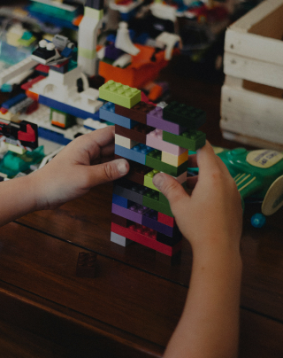
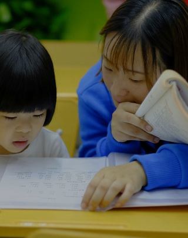
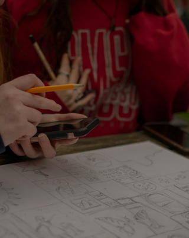
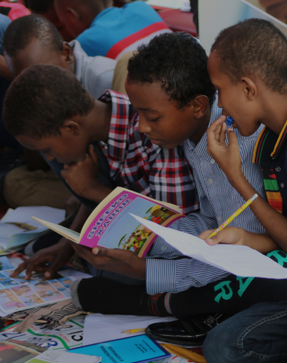
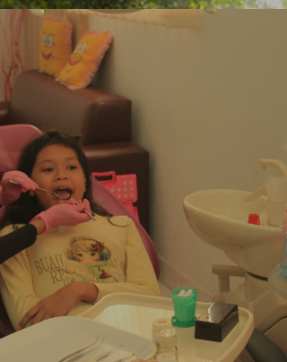
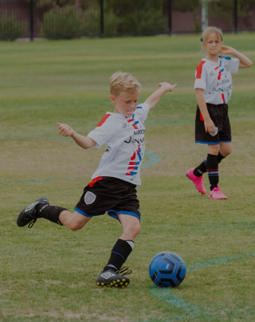
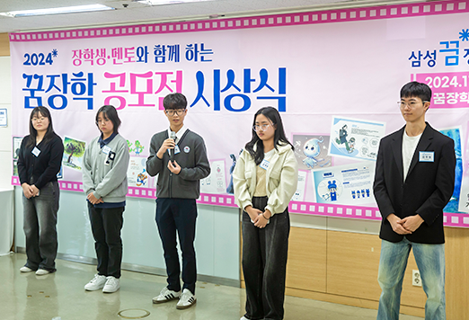
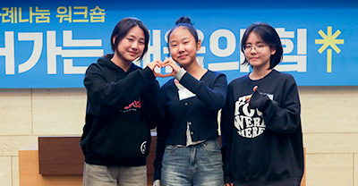
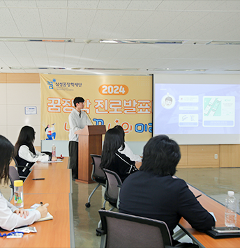
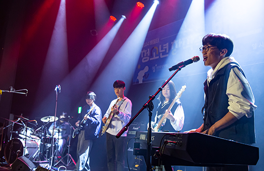

사람이 있는 곳을 지원하며
사람을 통해 사람을 키웁니다.
아이들과 소통하며 지지하는 어른의 역할, 멘토링 시스템을 방탕으로 합니다.
더불어 성장하는
배움공동체
다양한 교육의 기회를 함께 나눕니다.
-

지역형
교육복지사업육소외 아동·청소년의 흥미와 필요에 기반한 자유주제의 현장 맞춤형 교육프로그램 운영 지원 교육복지 개별사업 입니다.
자세히 보기 -

멘토링
꿈장학사업다양한 분야에 꿈과 가능성이 있는 청소년들을 멘토와 함께 선생님의 교육적 지지를 받으며 꿈을 지원하는 사업 입니다.
자세히 보기 -

배움터
교육지원사업지역적 · 사회경제적 이유로 교육지원이 부족한 아동을 위하여 지역의 다양한 배움터들이 협력하여 지원하는 사업입니다.
자세히 보기 -

글로벌
장학사업불가피하게 흩어진 현지 아동 청소년을 교육적으로 지원하고, 발전을 이끌 수 있는 글로벌 리더로 양성하는 사업입니다.
자세히 보기 -

청소년치아
교정지원사업재단학생 중 치아교정이 필요하나 적절한 치료를 받지 못한 청소년에게 무료 치아교정의 기회를 제공하는 사업입니다.
자세히 보기 -

주제별
교육복지사업교육소외 아동‧청소년의 건강한 신체와 정신을 키우기 위한 단체 스포츠 프로그램 운영 하는 복지 사업입니다.
자세히 보기
장학재단 활동
-
멘토링 소통법

멘토링 소통법
한편 재단은 ‘꿈장학 공모전 수상작 온라인 전시회’를 통해 장학생 수상자들의 작품을 온라인으로 감상할 수 있는 자리를 마련했다. 전시회는 11월 4일부터 진행되며, 서로에게 댓글을 남기며 응원 메시지를 전할 수도 있다.
-
멘토링 꿈장학사업">멘토링 꿈장학사업
멘토링 꿈장학사업
지난 11월 2일(토), 재단 꿈장학센터에서 ‘장학생·멘토와 함께하는 2024 꿈장학 공모전 시상식’이 열렸다. 이날 행사는 인사말씀과 수상자 시상, 심사 총평, 수상자 소감 발표, 최우수 영상 상영 순으로 진행됐으며, 재단의 정기영 이사와 우진중 사무총장, 신달자 심사위원장을 비롯해 멘토 선생님과 장학생 수상자, 가족 등이 함께했다.
-
변화의 워크숍
변화의 워크숍
“문화 다양성에 초점을 두고 다양한 집단 간의 상호 접촉과 교류에 중점을 둔 상호문화주의로 나아가기 위해서는 ‘지구촌’이라는 관점을 갖고 이웃 문화를 일상화하는 태도가 중요하다.”라고 설명했다.
-
"나의 미래”
"나의 미래”
이어서 장학생들의 본격적인 진로발표가 시작됐다. 장학생들은 직접 준비한 발표 자료를 활용해 오랜 시간 간직해 온 자신의 소중한 꿈을 소개하고 그 꿈을 꾸게 된 계기와 이를 실현하기 위한 계획 등을 당차게 발표해 나갔다.
-
청소년 밴드
청소년 밴드
첫 번째 무대로 나선 밴드림(청소년센터 두드림)은 서정적인 사운드가 돋보이는 자작곡 ‘친구’를 선보였다. 평소에 쉽게 전하지 못하는 말을 노래 가사에 담아 이야기하기 위해 결성했다는 중학생 밴드 밴드림은 멀어진 친구와의 즐거웠던 추억을 회상하며 다시 그때로 돌아가고 싶다는 진솔한 고백을 노래했다.